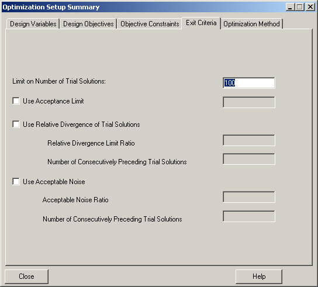

This topic describes how to define exit criteria to use to
determine completion of optimization.
Pre-requisites:
An open INR file that contains optimization elements such as a scalar
real variable. An objective constraint has been defined and validated.
Context: Define the number of trial solutions.
Right-click the Editor window and select
Optimize> Define Exit Criteria
.
The Define Exit Criteria tab on the Optimization Setup Summary window is displayed.

Accept the default for Limit on Number of Trial
Solutions
in the dialog, or change the number in the field.
A number is required.
Optionally, select the check box, Use Relative Divergence of Trial Solutions.
Accept the default or enter a value in the field for Relative Divergence Limit Ratio.
Accept the default or enter a value in the field for Number of Consecutively Preceding Trial Solutions.
Optionally, select the check box, Use Acceptable Noise.
Accept the default or enter a value in the field for Acceptable Noise Ratio.
Accept the default or enter a value in the field for Number of Consecutively Preceding Trial Solutions.
Result: The exit criteria are set.
Post-requisite:
When you are ready, select an optimization method.